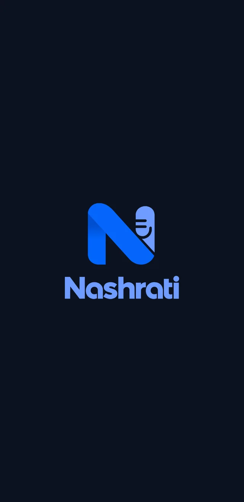
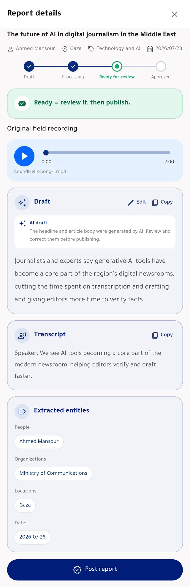
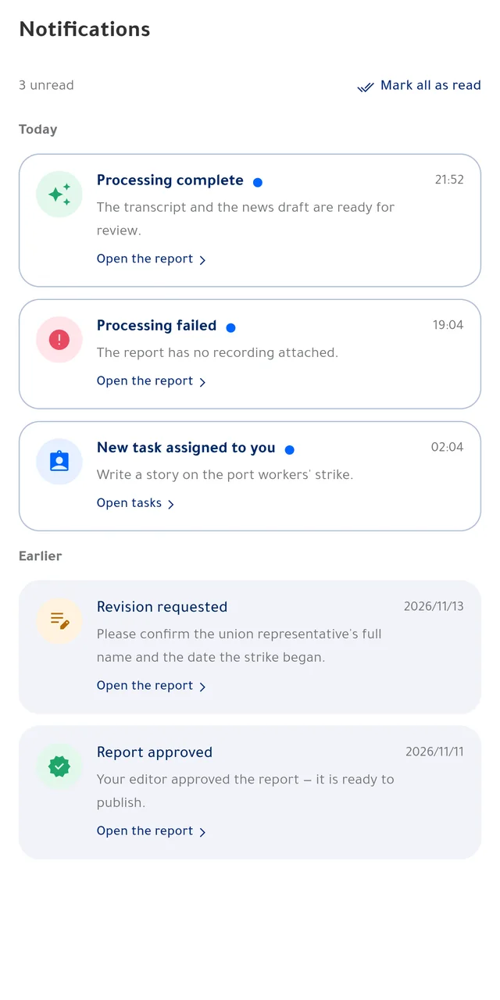
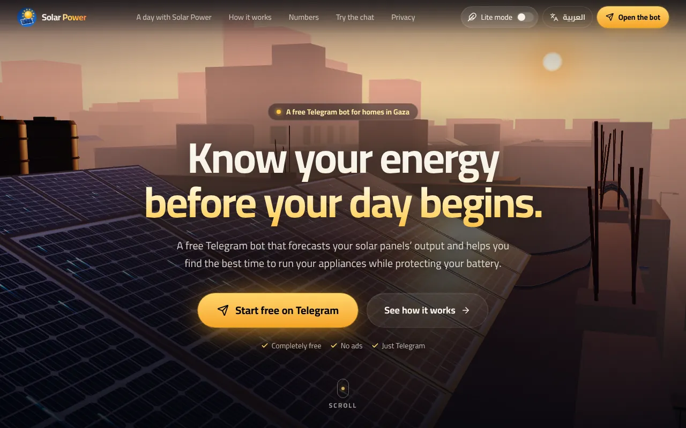

Community · 2026 – now
Google Developer Groups
Marketing & Media Lead at GDG on Campus Al-Aqsa University, Google's developer community for university students. I make sure its events and workshops reach the students they're for.

01About
I'm a senior in Intelligent Systems and Computer Engineering at Al-Aqsa University, based in Gaza, Palestine — and I'm building my way into tech.
My work spans AI, Data Analytics, and Machine Learning. What I enjoy most is turning ideas into real products: AI-powered web apps and tools that actually solve problems. Every project teaches me something new, and that's the part I never get tired of.
My story isn't a straight line. I kept building, studying, and shipping through extremely difficult circumstances — power cuts, unstable internet, and everything that comes with living through a crisis. Those constraints didn't stop the work; they shaped how I work: resourceful, self-taught, and relentless about finishing what I start.
I'm still learning, and I plan to keep going. When things get hard, you adapt; you don't quit. Skills can be taught, but consistency is what carries you through.
Community · 2026 – now
Marketing & Media Lead at GDG on Campus Al-Aqsa University, Google's developer community for university students. I make sure its events and workshops reach the students they're for.
Team leader · Jul 2026 – now
I lead the team behind Nashrati, an AI newsroom platform with a Laravel API, a React dashboard, Python AI services, and a Flutter app — and I built the mobile app myself.
Freelance · 2024 – now
I run a small freelance service using generative-AI image tools to produce interior-design visualizations for clients — homes, cafés, wedding halls, and event spaces — turning rough ideas into photorealistic concepts they can act on.
Volunteer
During a crisis period I volunteered to organize and structure community data, helping local efforts track needs and resources when it mattered most.
Training · Nov 2026
A 144-hour program in software architecture, code organization, and development workflow, completed in November 2026.
02Work
Lead project · Team leader · Mobile & AI
AI-assisted news drafting for field reporters. Record an interview where the story is happening; Nashrati transcribes it, pulls out the people, places, and dates, and hands back a structured draft for a journalist or an editor to review before anything is published.
Nashrati is a team platform in four parts — a Laravel API, a React dashboard, Python AI services, and a Flutter mobile app — built at TAQAT Academy. As team leader I own the product scope and the architecture across all four parts, coordinate the team through a 12-week build cycle, and have presented the product to mentors, including at the program's ideas showcase. I also built the mobile app myself: its architecture, offline sync, audio capture, and its Arabic and English interface.






Featured · Team project · In progress

Featured · Automation
Featured · Machine Learning
Featured · Web · Course project
Featured · Research
A survey paper for my Artificial Intelligence course: ML paradigms, landmark architectures, real-world applications, and AI ethics, with the churn-prediction pipeline as its practical part.
Java application modeling an IT company: OOP design, class relationships, collections (ArrayList), and file handling.
Complete campus network in Cisco Packet Tracer: DHCP, RADIUS authentication, and WPA2-Enterprise wireless security.
Java library system built on my own generic stack, queue, linked list, and dynamic array (no built-in collections), with role-based access for students, employees, and librarians.
Control-system designs for classic automation scenarios: a traffic-signal controller and a water-pump controller.
No projects in this category yet.
03Lab
The question behind my pattern-recognition research, as something you can play with. A k-nearest-neighbors classifier decides whether a bank customer stays or leaves by asking the customers most like them. But “most like” depends on units: measured raw, a balance in the tens of thousands drowns out an age in the tens.
Synthetic data, for illustration. Accuracy is leave-one-out: each customer is predicted from all the others.
04Skills
EDA, preprocessing, classifier comparison, interpretation, and research-driven evaluation.
Shown in churn prediction and pattern-recognition workLangChain foundations, Claude API workflows, agent skills, subagents, and responsible AI practice.
Backed by verified credentialsLed the Nashrati team and built its Flutter app on Clean Architecture: offline-first sync, audio capture, Arabic and English, and 1,500+ automated tests.
Shown in NashratiResponsive, accessible interfaces built with semantic HTML, modern CSS, and vanilla JavaScript.
Shown in Gaza Aid and this portfolio05Certificates
32 verifiable certificates, led by the Google AI Professional Certificate, IBM's data-analytics courses, Anthropic's Claude API and agent courses, and TAQAT's 144-hour CodeMap program. Open any one to see it; every row links to the issuer's verification page.
06Contact
Available for remote internships, AI and data roles, selected freelance work, and thoughtful collaborations. Send a message here and I'll reply by email.
My local time